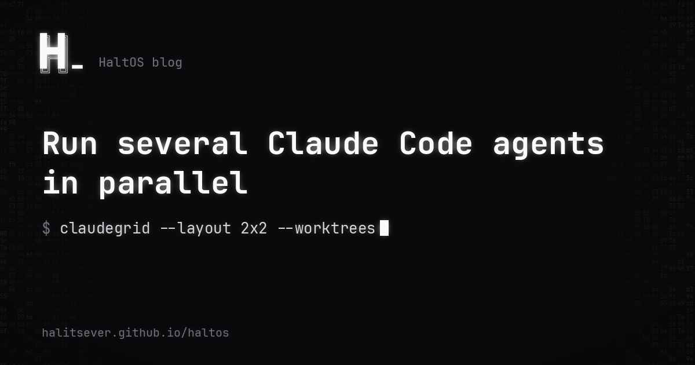

Run several Claude Code agents in parallel with git worktrees

One Claude Code agent per task is the easy part. The moment you run a second one in the same checkout, both agents edit the same files and step on each other. Git worktrees fix that, and claudegrid sets them up for you.
The problem with one checkout
A repository has one working directory. If one agent refactors the API while another fixes a test, they share that directory: the second agent sees half-finished edits from the first, runs tests against code that is mid-change, and may overwrite a file the other just wrote. The result is a mess you have to untangle by hand.
What a worktree is
A git worktree is an extra working directory attached to the same repository. Each worktree has its own branch and its own files, but they share history and objects, so creating one is fast and cheap:
git worktree add ../myapp-fix-tests -b fix-tests
git worktree add ../myapp-api -b api-refactorNow each agent works in its own directory on its own branch. Nothing they do can collide until you merge.
Let claudegrid do it
claudegrid opens a grid of Claude Code sessions in one window. With --worktrees, every pane gets its own worktree and branch:
claudegrid --layout 2x2 --worktrees \
-p "Fix the failing tests in tests/api" \
-p "Add pagination to the users endpoint" \
-p "Write docs for the new config options" \
-p "Find dead code in src/legacy"Each -p sends a prompt to the next pane, so all four agents start working at once. --model picks the model for every pane, and --backend chooses where the grid opens: Konsole, tmux, kitty, WezTerm or iTerm2. With tmux, --detach starts the session in the background so it survives your SSH connection.
Reviewing and merging
When an agent finishes, its work is a normal branch. Review it like any pull request:
git diff main...fix-tests
git merge fix-tests
git worktree remove ../myapp-fix-testsKeep each task small and self-contained. Agents do best with one clear goal per pane, and small branches are easier to review and merge in any order.
Where this runs best
Four agents working for an hour is exactly the kind of job you do not want to stop when your laptop sleeps. On a server, the grid keeps running after you disconnect. HaltOS sets up such a server with claudegrid preinstalled and a desktop you reach over RDP.
All posts Next: Secure a VPS for remote development: SSH keys, ufw and RDP